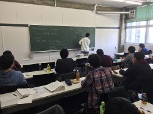
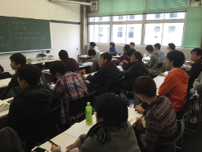
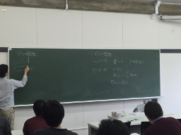
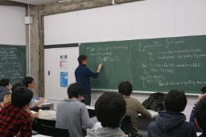
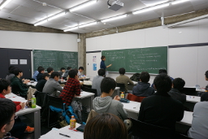

数物セミナー 冬の大談話会2015 in 早稲田
早稲田大学にて冬の大談話会2015が12月6日に開催されます。
様々な学年を対象にした学部生による３つの講演と、
講演者や参加者を交えた交流の時間をお楽しみください。
ポスターセッションは、飛び入りも大歓迎です。印刷したポスターをお持ちください。
| 談話会とは | 過去の談話会 | |
| 数物セミナーでは、各大学の教室などを借りて不定期に談話会を行っています。 談話会とはどのようなものであるのか知りたい方はご覧ください。 | 過去に行われた談話会の講演の詳細および、 一部のUstream配信アーカイブ・講演スライドなどを掲載していますので 参考にしていただければと思います。 | twitterでも談話会の情報を配信しております。 アカウントをお持ちの方はフォローしてみてください。 |

|
|
数物セミナー公式Twitterアカウント |
日にち・場所
2015年12月6日（日）
早稲田大学 西早稲田キャンパス 61号館 412教室,414教室
日曜日の開催のため、構内に入る際は正門よりお願いします。
タイムテーブル
※談話会終了後，懇親会を行う予定です
※ポスターセッション及び団体紹介の為の時間が短くなっております．基本的にお昼休みの時間を利用しての発表するようお願いします．
| 時間 | 412教室 | 414教室 |
| 10:00- 10:05 |
開会の挨拶 | |
| 午前の部 10:10- 12:10 |
『Kähler 多様体の幾何学』 井上 瑛二 （東京大学理学部数学科4年） |
『It's a Small Engine』 花里 太郎 （慶應義塾大学 理工学研究科修士1年） |
| 午後の部（前半） 13:30- 15:30 |
『微分形式とトポロジー: de Rham理論入門』 飯田 暢生 （東京大学教養学部2年） |
『ニューラルネットワークの数理』 大森 亮 （東京大学教養学部2年） 講演スライド |
| 午後の部（後半） 16:00- 18:00 |
『トーリックの話』 桑垣 樹 （東京大学大学院数理科学研究科修士2年） |
|
講演アブストラクト
◇『Kähler 多様体の幾何学』アブストラクト
◇『It's a Small Engine』アブストラクト
◇『微分形式とトポロジー:de Rham理論入門』アブストラクト
◇『ニューラルネットワークの数理』アブストラクト
◇『トーリックの話』アブストラクト
アルバム
|  |  |
{kind=link}
{kind=link}
|  |  |
{kind=link}
{kind=link}
|  |
{kind=link}
アクセス
◇東京メトロ副都心線「西早稲田駅」の「早大理工口」直結
◇JR山の手線・西武新宿線・東京メトロ東西線「高田馬場駅」から徒歩15分
※日曜日の開催のため、構内に入る際は正門より入構をお願いします。
ポスター
生配信・録画配信について
この談話会での生配信および録画配信は未定となっております。